Research
My work centers on program analysis and code intelligence — using large language models (LLMs) to reason about the algorithmic properties of code and to generate specification-aware test suites. Below are the main directions I work on, with related publications listed on the Publications page.

Time Complexity Prediction
Predicting and formally analyzing the time complexity of programs, including semi-supervised learning in low-resource settings and multi-expert consensus approaches.
Specification-driven Test Generation
Generating specification-aware test cases with LLMs — exposing algorithmic bottlenecks and checking whether generated code enforces input preconditions (contracts), often through neuro-symbolic LLM–SMT pipelines.
Multi-agent Debate & Reasoning
Frameworks in which multiple LLM agents debate to improve reasoning, validation, and decision-making for program analysis tasks.
Korean NLP
Detection and detoxification of Korean dialect toxicity, and dialect translation with curriculum- and attribute-based learning.